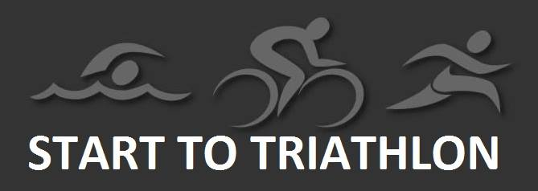
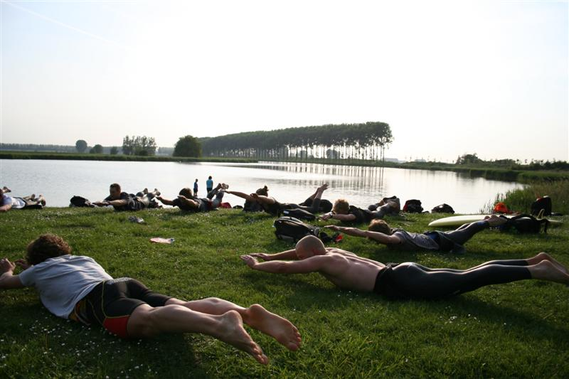

Vanaf 17 april kan iedereen, met inbegrip van mensen zonder ervaring, gedurende 14 weken training volgen om met hun eerste sprint of kwarttriatlon mee te doen. Er wordt toe gewerkt naar de sprinttriatlon aan het provinciale sportcentrum De Boerekreek op zaterdag 29 juli over 500m zwemmen, 20 km fietsen (verboden in groep te rijden) en 5 km lopen of de kwarttriatlon van Eeklo op zondag 25 juni. Ook nadien wil het SMO-Specialized Triatlon Team de mensen binnen de club verder begeleiden.
Het SMO-Specialized Triatlon Team is een Meetjeslandse triatlonclub dat niet enkele voor jeugdatleten, toppers of ironman-atleten is weggelegd. Het bestuur wil dit jaar extra mensen aantrekken die geen ervaring hebben binnen de triatlonsport. Vanaf de leeftijd van 18 jaar kan je je inschrijven voor deze kennismakingssessie, ongeacht je geslacht of sportieve achtergrond. Het Start2Triatlon project heeft als doel mannen en vrouwen zonder triatlonervaring een 14 weken durend trainingsprogramma aan te bieden om samen in groep naar het evenement toe te werken onder deskundige begeleiding. Wekelijks wordt er in groep getraind en krijg je nog enkele persoonlijke trainingen mee aan de hand van de beschikbare tijd. De deelnemers ontvangen eveneens een Start to-pakket met triatlonspecifieke gadgets.
Trainingsuren Op maandag wordt er in Eeklo gezwommen van 19u45 tot 20u45, dat vormt bij de meesten de grootste drempel om hiermee van start te gaan. Ook de wissel tussen lopen en fietsen is niet evident, daar wordt naar aanloop van het finishersevent verder op getraind. Ook in het zwemmen wordt extra getraind, omdat dit toch de moeilijkst discipline is voor velen in een triatlon. We hebben bewust gekozen voor de regionale wedstrijd in St-Laureins, waar het zwemmen wordt beperkt tot slechts 500m. De begeleide trainingen omvatten 14 zwemtrainingen (zwembad Eeklo), 1 open water training, 2 fietstrainingen en 2 looptrainingen.
Ruim aanbod Het is natuurlijk de bedoeling dat mensen na het welslagen van hun eerste sprinttriatlon de smaak te pakken hebben en bij onze vereniging verder blijven trainen. 2 Ervaren en gediplomeerde trainers zullen de taak op zich nemen om deze nieuwe doelgroep verder te begeleiden.
Binnen het SMO-Specialized Triatlon Team zijn de voorbije jaren zijn heel wat leden gegroeid in de triatlonsport door samen te trainen, elkaar te motiveren en nieuwe doelen te stellen. Triatlon of multisporten, dat kan iedereen! Het deelnamegeld voor deze cursus kost € 70 voor 14 begeleide sportsessies met individuele opvolging en bijsturing. Inschrijven kan via info@smo-specialized.be.
Er kunnen zich maximuum 18 cursisten aanmelden voor deze nieuwe reeks.
Ben je nog niet overtuigd? Dan kan je hier nog het verhaal lezen van één van onze cursisten van vorig jaar.
